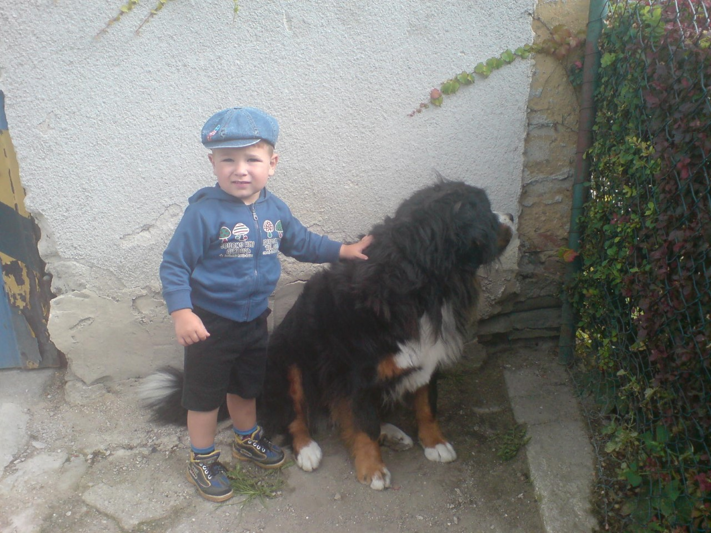
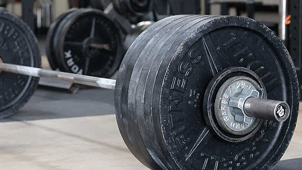
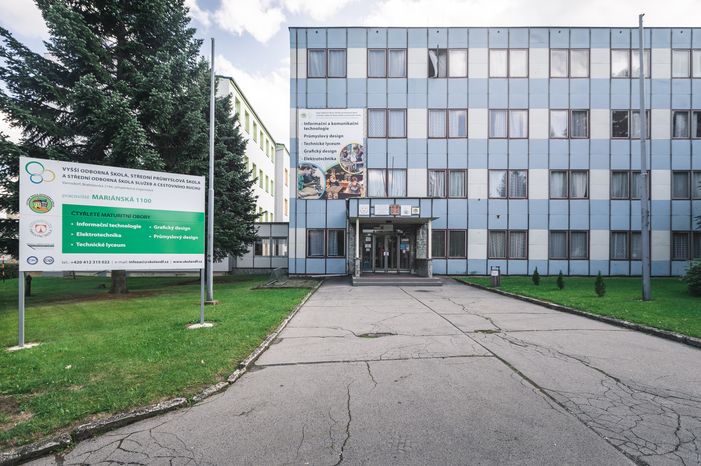

Jmenuji se Jakub Kovačík a vystupuji pod přezdívkou "Las". Je mi 16 let, ročník 2007. Bydlím ve městě Nový Bor.
Mými koníčky jsou: Hudba, MMA, posilování a hraní her.
Mám dokončené základní vzdělání. V současnosti studuji IT na střední škole ve Varnsdorfu.
